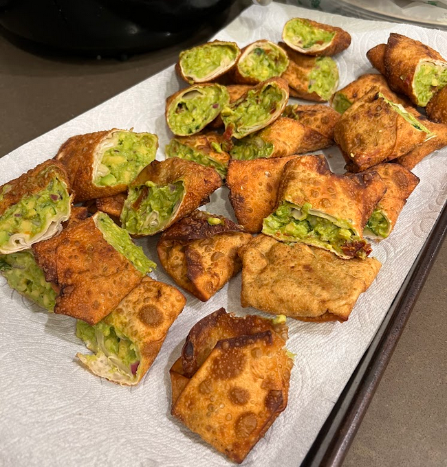

Avocado Egg Rolls
A Cheesecake Factory Copycat Recipe

Description
Avocado Egg Rolls are a delicious snack that can be made in a short amount of time, typically under an hour!
These rolls consist of a fried, crispy exterior with a smoothy, flavor packed avocado mixture on the inside.
Ingredients (1 serving)
- 3 Avocados (diced)
- 1/4 cup Red Onion (diced)
- 8 tablespoons Sun Dried Tomato (cut into small pieces)
- 3 tablespoons Cilantro leaves (chopped)
- 1/4 teaspoon Salt
- 1 Lime worth of juice
- 1/2 of a Lemon's juice
- Vegetable oil for frying, the amount needed will vary depending on your pot size
- 8-12 Wonton wrappers
- 1 egg (if doing more than one serving still use one egg and just add water to it)
Steps
- Begin by chopping up your avocados, red onion, sun dried tomatoes, and cilantro if not done already.
- Next add all of your chopped ingredients to a mixing bowl and mix until everything is incorporated and your avocado is no longer chunky.
- Once everything is mixed together, add in your lime juice and mix around a bit more.
- Prepare egg mix by cracking your 1 egg into a small bowl and adding a bit of water then mix it together until the yolk and whites are mixed together.
- Now, get a cutting board and place a wonton wrapper on it.
- Using your finger or a sauce brush, coat all four edges of the wonton wrapper with the egg wash. Make sure to get about 1/8th of an inch of each edge covered by the egg wash mixture so it can properly stick once folded up.
- Using a spoon or your mixing utensil, place some of your mixture on to the center of the wrapper in a line with each end of the line pointing to a corner.
- Fold the wrapper like a burrito by folding one of the corners that the line of mixture isn't pointing towards over the mixture, tucking the sides in, and then rolling up into a cylindrical shape.
- Set aside on a pan, plate, or wire rack until you're ready to fry.
- Repeat steps 5-9 until you're out of the avocado mixture or wonton wrappers.
- Once all your egg rolls are ready to be fried, add enough vegetable oil to a pot to where an egg roll could completely submerge in the oil without touching the bottom of the pot.
- Turn your stove on to High and wait for your oil to heat up.
- Add in as many egg rolls to the oil as you can without having the egg rolls touch each other. They should fry for about 2-3 minutes or until the outside of the wrapper is a nice golden brown color.
- Remove egg rolls from the oil once they're done frying and place onto either a wire rack with paper towels or a pan underneath to catch the oil that falls off or place directly on to paper towels.
- Repeat Steps 13 and 14 until all egg rolls are done frying.
- Optionally, cut each egg roll diagonally down the middle to plate and serve.
- Finally, enjoy!